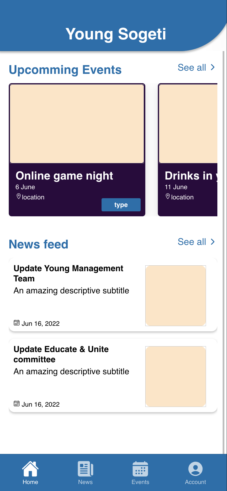
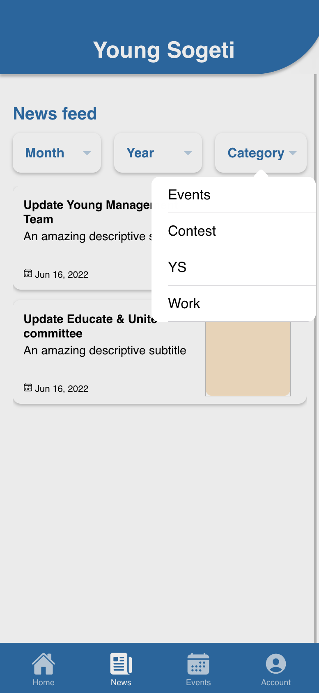
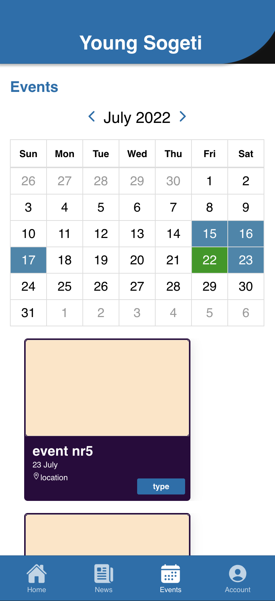

I am a passionate Frontend Developer with a heart for UI Design. I was trained as a biologist but I
really found my passion in Frontend Development. For me, Frontend Development is the perfect
combination
between two activities that make me enthusiastic; problem solving and design thinking. I like to
think
about how to simplify and communicate complex things. This is something I also find important in my
code
and design.
I have a strong foundation of vanilla JavaScript, CSS, React.js and Vue.js. My knowledge of life
cycles,
state management (Redux, Vuex), routing and API calls enables me to build what I have in mind. In
addition, I'm good with framer-motion / react-spring for creating smooth UI with micro-animations.
During my projects at Sogeti I learned to work in a team within a CMS (Gitlab, AWS). Here I was also
able to gain knowledge of web accessibility and the WCAG 2.0 guidelines. Besides my work I am
developing
the NFT project 'Getaways' on the Cardano blockchain.
I am flexible, open to criticism and learn quickly to achieve the result I have in mind. I am at
my
best in an environment where creative solutions are required for complex problems.
Expertise
HTML
CSS/SCSS
JavaScript
React.js
Angular
Redux
Ionic
Typescript
User Experience (UX)
Responsive Design
WCAG 2.0
Education
Diplomas
Applied Biology
Ohio Business Course
Certificates
Certificate 1
Certificate 2
Certificate 3
Sogeti work history
Role: Frontend Developer
Company Name: Sogeti
Period: april 2022 till present
Description
At the moment I am involved in building a mobile application that will be used internally to share
with the Young Sogetisten (employees under 32), a group of news than 800 professionals working at
Sogeti. Here I work closely with one frontend developer, two backend developers and two cloud
specialists. In our project we work together according to the agile/scrum method. My
responsibilities are connecting the backend to the frontend, building the interface and adjusting
the design where necessary. For building the application we work with AWS and I use Typescript,
Angular, Ionic and SCSS for the front-end. In this project I am able to improve my knowledge of
Angular and Typescript and I have gained experience with agile working.
Because my focus has mainly been on web development, it is very refreshing to be involved in mobile
development. The fact that this application will be used by so many sogetists is also something that
motivates me to deliver the best possible product. On this I managed to put down a well-functioning
UI and we expect to successfully deliver the frontend next month. The fact that I have acquired
enough knowledge of Angular and Typescript in a short time to realize a smoothly running application
has given me a lot of confidence as a developer.



Role: Frontend Developer
Company Name: Sogeti
Period: 01/01/2022 till present
Description
For the sales department at Sogeti I contributed to improving and rebuilding an application that is
used to provide insight into the status of employee availability and application procedures. In this
project I worked together with back-end developers, cloud specialists and fellow front-end
developers. I was responsible for designing and building a large part of the front-end, consisting
of a search function, various filtering methods and the results section where all employees are
displayed. For the front-end I worked with React, Axios for API calls and Redux for state
management. I was also involved in making an inventory of the wishes and requirements within Sogeti.
Because the current application led users to different screens, we converted the application into a
real single page application. In addition, I made improvements in the filter methods, search
function, added modals with additional information and I made the application fully responsive. The
final result was well received and exceeded the expectations of the product owner and sales staff.
What I really liked about this assignment was determining where the needs were and how we could
translate this into an improved UI. The fact that these kinds of small changes in an interface make
people's work easier every day is very motivating for me and something I get a lot of satisfaction
from.
Role: Frontend Developer
Company Name: Sogeti
Period: 01/01/2022 till present
Description
My time at Sogeti started with taking the Ohio Business course. The Ohio Business course is an
intensive three-week program with the aim of working in a pressure cooker together with a team. By
means of coaching/training and gaining experience you can grow faster and further develop soft
skills. This training is provided in conjunction with Ohio University. During this training I
followed several courses related to business analysis, including business pitches, business
financials, presentation formats and storytelling in business.
As the main project we were asked to devise a new service or product for Sogeti and to elaborate it
in a business plan, and to give a business pitch. In this process I was responsible for leading the
creative processes within the team (consisting of 7 young professionals), designing infographics,
shaping the presentation and presenting the final product to a large group, including young
professionals, coaches from Ohio University, Sogeti coaches and a number of investors. Our final
product was a service package related to web accessibility that can be offered to companies to make
their websites and applications WCAG 2.0 proof. I learned a lot about WCAG legislation and
requirements as a result.
The Ohio Business course taught me to switch quickly, to work under pressure and to deal with
feedback. It has taught me to deal professionally with conflicting interests of stakeholders and to
dare to make choices in this regard. In addition, I discovered that I really enjoy leading creative
processes. This has made it clear to me where my strengths lie and what I would like to do in the
future.
Previous work history
Role: Owner / Frontend Developer
Company Name: Getaways
Period: 01/01/2022 till present
Description
I am very interested in 3D web integration and the possibilities it offers for visualization and
communication. When I came into contact with NFTs, the question immediately came to mind: is it
possible to host interactive 3D NFTs on the blockchain? This eventually led me to set up my NFT
project 'Getaways' on the Cardano blockchain. Getaways is a story-driven interactive NFT project
with a special focus on puzzles.
There is little public information available about 3D NFTs, which makes the development of this
project a great adventure and very instructive. There is a lot involved; creating 3D models in
Blender, creating animations, writing 3D web applications in React, organizing metadata and hosting
data on the InterPlanetary File System (IPFS). I recently hired someone who does the marketing for
me so that I can fully focus on developing the applications and models. At the moment I am
developing a 3D interactive puzzle that you can play in your crypto wallet.
I learned something very important from Getaways: As long as I keep taking steps and not giving up, I
can build anything I envision. It has also brought me a lot of front-end knowledge. In particular,
my knowledge of React has increased enormously in recent times.
I designed various printed matter for Markthandel Middelburg. I was also responsible for their social
media management (Facebook & Instagram) and building and maintaining the website
(https://markthandelmiddelburg.nl). The owner wanted to have a working website online for little
money and quickly. For this I had to create clear expectations and justify options within the
budget. In the end I submitted a number of HTML/CSS templates for this and adapted them to my
liking. At a later time I built two custom components for this: a vacancy page with fold-out
vacancies and an order form with automatic confirmation email and order list for the owner. I also
made the website fully responsive. I mainly learned here that it is important to create clear
expectations for the customer (don't promise more than you can deliver in a short period of time).
Role: Laboratory Technician
Company Name: Eurofins
Period: 01/01/2022 till present
Description
I worked at Eurofins as a Technician. There I worked in the COVID-19 laboratory in Rijswijk during
the most hectic period of the Corona pandemic. My main task here was data analysis of PCR data. In
addition, I was involved in solving and administrative processing of non-conformities in the
laboratory, writing manuals for the use of equipment and training laboratory personnel. My work at
Eurofins has taught me the importance of precise work and accurate documentation. I also learned to
work under pressure there and it gave me insight into how a large company operates. In addition, it
has given me insight into the need for well-functioning software with intuitive interfaces. With
data processing on this scale, it showed me that small design errors can have major consequences.
There was little to no form validation and the same data had to be entered in multiple applications
or Excel sheets. Bugs in the front-end caused dozens of detours and exceptions for which large
flowcharts were created to reduce errors in data entry. The pressure was high and the room for error
small. I have seen with my own eyes that an intuitive and well-functioning front-end is essential
for a large company. This increased my interest in Frontend Development at the time.
Role: Graphic Designer
Company Name: Euroloop
Period: 01/01/2022 till present
Description
For Euroloop I made a new design of their logo and designed various printed matter such as
letterhead, envelopes, certificates and business cards. I was also responsible for communication and
coordination with the printing company. Here I learned to find the balance between the customer's
demand, my own vision and how to present possible innovative ideas in a way that also makes the
customer enthusiastic. By presenting different designs and clarifying the logic behind the designs,
we eventually came to a design that I received a lot of positive feedback on. For my work I used
Figma, Adobe Illustrator & Indesign.
Role: Laboratory Assistant
Company Name: Eurofins
Period: 01/01/2022 till present
Description
I started at Eurofins' COVID-19 laboratory as a Laboratory Assistant. My tasks here involved DNA
extraction and performing PCR reactions. I have learned a lot in this short period. This gave me
insight into how a high-volume laboratory pipeline works and what bottlenecks there can be between
management and the layers below. For example, I have experienced how important it is that the needs
of employees are listened to and how their work can be made easier. This helped me later when I got
a promotion to Technician. For example, I was able to use a lot of this knowledge in writing clear
manuals and personalizing training courses.
Role: Research Assistant
Company Name: Naturalis Biodiversity Centre
Period: 01/01/2022 till present
Description
During my education I did several internships at Naturalis as a researcher. Here I worked with my
supervisor on the evolutionary history of two winged insects. After this, I briefly started working
as a Research Assistant to complete the studies we were conducting at the time. My role was writing
parts of scientific publications, analyzing anatomical data and processing it into 3D models. To
increase the workability of these models, I took the initiative to process the 3D models in PDFs. In
this way, these models have become insightful for people without a powerful computer and makes it
easy to compare such models. In this way I was able to use my insight into user experience in an
industry that normally receives little attention. This eventually led to the request from Naturalis
to write a manual for the implementation of such 3D models in PDFs, which is used to full
satisfaction in the 3D lab of Naturalis to this day.

 Getaways Website
Getaways Website